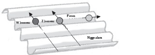

Higgs bozonu, LHC ve
kütlenin anlamını aramak
Tanrı parçacığının Tanrı’yla herhangi bir ilgisi olmadığını öğrenmek sizi şaşırtmayabilir. Tabii, şimdiye kadar kimsenin bu parçacığın varlığını kanıtlayamamış olması dışında. Bu terimi Nobel ödüllü fizikçi Leon Lederman geliştirmiştir. Terim kısmen, bir parçacığın evrenle ilgili bütün soruları cevaplayacağını düşünen fizikçilere verilmiş esprili bir cevaptır, kısmen de bilimin keşiflerinin hayatın anlamı hakkında söyleyecek bir şeyi olabileceği düşüncesinin alaya alınmasıdır.
Maalesef Tanrı parçacığı bunların hiçbirini yapmaz: Bize evren hakkında her şeyi söylemediği gibi hayatın anlamını da vermez. Fakat bu Higgs bozonunun aramaya değer olmadığı anlamına gelmiyor. Higgs bozonu, standart parçacık fiziği kuramının nihai parçasıdır. Varsa, evrenin asli doğasının büyük bölümünü ortaya çıkardığımızdan ve maddelere kütlelerini neyin verdiğini bulduğumuzdan emin olup dinlenebiliriz. Yoksa tahtanın başına yeniden dönmemiz gerekebilir.
Bu oyunun sahneleneceği yer İsviçre’dir. Cenevre’deki Avrupa Nükleer Araştırmalar Örgütü’nün binasında bulunan dünyanın en güçlü parçacık hızlandırıcısı fizikçilerin “standart fizik modeli” dediği şey hakkında hakikatin tellali olacaktır. Büyük Hadron Çarpıştırıcısı protonları son derece hızlı iki trenin gücüyle çarpıştırdığında Tanrı parçacığı ortaya çıkabilir. Dünyanın dört bir yanında fizikçiler tetikte, Peter Higgs’in 1964’te söylediklerinde haklı olup olmadığını görmeyi beklemektedirler.
Higgs Bozonunun Doğuşu
Peter Higgs’in iddiası bir hayli doğrudandır. Higgs, kütlenin kökenini incelemeye yönelik çeşitli girişimlere cevaben kuramsal fiziğin yeni bir alanın varlığını nasıl mümkün kıldığını betimleyen bir makale kaleme almıştır. Bu alan, kütleçekim alanı ya da elektromanyetik alan gibi bilinen alanlara bir ilave olacaktır. Büyük Patlama’daki ateş topunun ardından evren soğurken bu alan ortaya çıkmış, belli parçacık tipleri için bir sürükleme kaynağı oluşturmuş, belki de onlara kütle olarak bildiğimiz özelliği vermiş olabilir.
Makale başta Physics Letters dergisinin editörü tarafından, “fizikle belirgin bir ilgisi olmadığı” gerekçesiyle reddedilmiştir. Higgs bu fikre somut bir uygulama alanı vermek için bu makaleyi yeniden kaleme almıştır: Bahsettiği alanın çekirdekteki parçacıkları bir arada tutan kuvvette doğabileceğini söylemiştir, fakat yine kimse bununla fazla ilgilenmemiştir. Steven Weinberg, Sheldon Glashow ve Abdus Salaam elektromanyetik ve zayıf nükleer kuvvetleri birleştirmeye çalışıncaya dek.
Bu iki kuvvetle ilgili kuramlar, birçok bakımdan tekinsiz derecede benzer görünmektedir. Kuantum elektrodinamiği olarak bilinen elektromanyetik kuvvet kuramı ile bazı radyoaktivite biçimlerini yaratan ve güneşin nükleer füzyonunu besleyen “zayıf” nükleer kuvvet kuramı madalyonun iki yüzünü andırmaktadır (bkz. Doğanın En Güçlü Kuvveti Hangisidir?). Weinberg ve Salaam, durumun gerçekten de böyle olduğunu göstermiş ve bu iki kuvveti “elektrozayıf” kuramda birleştirmişlerdir. Fakat bir sorun vardır. Bu kuram, kısaca W ve Z bozonları (bozon bir kuvvet yaratan bir parçacıktır) denilen henüz görülmemiş parçacıkların da parçacıklar bahçesine eklenmesini gerektirmiştir.
Biraz yüz kızartıcı bir durum, bu iki parçacığın kütleye sahip olmasıdır. Bu yanlış görünmektedir; çünkü en meşhur bozon, elektromanyetik kuvveti yaratan fotondur ve fotonun kütlesi yoktur. W ve Z bozonları ile foton, birleşik bir kuram içinde aynı işi yapıyorlarsa, aralarında bir tür “simetri” olması gerekir. W ile Z bozonlarının kütleleri yüzünden aralarında bir simetri olmaması fizikçilerin, bir şeyin simetriyi bozduğundan şüphelenmesine yol açmıştır; tıpkı titiz bir biçimde dengelenmiş mutfak tartılarına bir parça ağırlık eklenmesinin hassas dengeyi bozması gibi. Peki, ama bu ağırlık neydi? Peter Higgs, cevap olarak kendi alanını gösterdi.
1967’ye gelindiğinde Weinberg ve Salaam, Higgs alanını elektrozayıf kuramla birleştirmişlerdi. 1983’te CERN’de W ile Z bozonları tam da Weinberg ile Salaam’ın tahmin ettiği biçimde görüldü. Bu bir zaferdi, parçacık fiziği seferinin kapanış marşıydı. Bir tek küçük ayrıntı dışında. Hiç kimse Higgs alanının gerçekten orada olup olmadığını bilmiyordu.
Higgs’i Avlamak
Higgs alanını çok çeşitli biçimlerde hayal edebilirsiniz; fakat aslında büklümlü bir metalin içindeki oyuklara parmağınızı sürtmeniz gerekir. Bu yüzey elinize düz gelir, parmağınız hiçbir dirençle karşılaşmadan oyuktan geçer. Şimdi parmağınızı oyukların üzerinden geçirin. Daha engellidir. Standart fizik modelinde, W ve Z bozonları açısından mesele budur. Foton her zaman Higgs alanındaki oyuklarda hareket ederken, öbür ikisi oyukların üzerinden geçer ve kütle olarak tercüme edilen bir direnişle karşı karşıya kalırlar.

HIGGS ALANININ ETKİSİ
Bu zarif bir fikirdir, fakat kanıta ihtiyacı vardır. Ve Higgs alanının evrene gerçekten, W ve Z bozonları tarafından hissedilen, ama foton tarafından hissedilmeyen yönetsel bir “parçacık” kattığını kanıtlamanın tek yolu, bu alanın ürettiği parçacığı bulmaktır. Her alanın kendisine özgü bir parçacığı vardır. Elektromanyetik alanın parçacığı fotondur, kütleçekim alanının parçacığı gravitondur (gerçi hiç kimse şimdiye dek bir graviton görmemiştir), güçlü etkileşimse glüon tarafından sağlanır. Genel kabul gören bilgilere göre Higgs alanı, Higgs bozonu yüzünden şeyleri kütleyle donatır. Sorun şudur: Genel kabul gören bilgilere güvenebilir miyiz?
Fizikçilerin parçacık fiziği kuramlarına güvenleri sınırsız değildir. Parçacık fiziği kuramı bazı bakımlardan son derece başarılıdır. Varlığını tahmin etmiş olduğumuz parçacıkların hepsi (şimdiye kadar en azından Higgs parçacığı hariç) hep bulunmuştur; birçok durumda da kuram bize tam olarak nereye bakmamız gerektiğini söylemiştir. Fizikçiler parçacık enerjisini elektronvolt ya da eV olarak ölçerler; örneğin bir elektron 9 voltluk bir pilin terminalleri arasındaki voltaj tarafından çekildiğinde 9eV kinetik enerji kazanacaktır. Salaam ve Weinberg CERN araştırmacılarına parçacıkları 80 ve 90 gigaelektronvoltla (GeV) çarpıştırırlarsa W ve Z bozonlarını bulacaklarını söylemiştir. Olup biten de tam olarak budur.
Gelgelelim standart model her şeyi tahmin edemez. Standart modelin temel sabitlerinin 26’sının denklemlerle yazıya dökülmüş deneylerde bulunmuş olmasının gerekmesi, bir parça hayal kırıklığı yaratmaktadır. Bazı parçacıkların da deneyip yanılma yoluyla bulunması gerekmiştir. Temel bir parçacık olan “üst kuark”ın mevcut olması gerektiğinin tahmin edilmesi ile bizim nihayet bu parçacığı bulduğumuz tarih arasında 20 yıl geçmiştir. Bu durum kısmen, kuramın bize nereye bakacağımıza dair hiçbir fikir vermemesinden kaynaklanmaktadır (“üst kuark” 170 GeV’de ortaya çıkmıştır). Maalesef Higgs bozonuyla aynı gemide bulunuyoruz. Orada olması gerekiyor, ama “ora”nın neresi olduğunu kimse bilmiyor. Bu yüzden de nihayet doğru enerjiye ulaşabileceğimiz ümidiyle çok daha büyük atom çarpıştırıcılar yapmayı sürdürüyoruz.
Çarpıştır ve Yakala
Her şey, gözünüze görünüyor olabileceği kadar ümitsiz ve rastgele değildir. Atomları çarpıştırmanın deneysel bir araç olarak sağlam bir tarihi vardır. Nihayetinde Ernest Rutherford atom çekirdeğini böylelikle keşfetmiştir. 1909’da Rutferford, atomun pozitif ve negatif yüklerinin birbirine karışmış olduğunu öne süren “erik pudingi” atom modelini sınamaya karar vermiştir. Rutherford incecik bir altın yaprağına bir alfa radyasyonu huzmesi –esasen bir helyum atomunun çekirdeğini– ateşlemiştir. Alfa parçacıklarının çoğu bundan etkilenmemiş, fakat bazıları şiddetli bir biçimde hasar almıştır. Rutherford elde ettiği bulgulara bakarak buradan atomun merkezinde pozitif yükün yoğunlaşmış olduğu küçük bir alan bulunduğu, ara sıra gözlenen ciddi hasarlara bu alanın neden olduğu sonucuna varmıştır.
Rutherford’dan bu yana, çekirdeğin içindeki karmaşıklıkları araştırmak için çok çok daha büyük parçacık hızlandırıcılar inşa ettik; bu çabamız teknolojinin bugün geldiği noktada zirveye ulaştı: CERN’deki Büyük Hadron Çarpıştırıcısı. Medyadaki haberlere bakılırsa Higgs bozonunu tespit etmek için geliştirilen ilk parçacık çarpıştırıcıymış gibi görünse de Büyük Hadron Çarpıştırıcısı ilk değildir. Higgs bozonunun hangi enerjilerde bulunabileceğini nasıl söyleyeceğimizi bilmediğimizden –standart model 96 GeV’nin muhtemel bir hedef olduğunu ileri sürmektedir– uzun yıllardır bu parçacığa rastlamayı umuyoruz. Fakat parçacık hızlandırıcı üstüne parçacık hızlandırıcı yeni umut ışığı olarak göklere çıkarılmıştır, ama hâlâ oralara varabilmiş değiliz.
Ciddi bir şansı olan ilk çarpıştırıcı CERN’deki Büyük Elektron Pozitron Çarpıştırıcısı’ydı (bkz. Neden Hiçbir Şey Yoktur da Bir Şey Vardır?). Çevresi 27 kilometre olan dairevi bir tünelin içine yerleştirilmiş olan LEP, elektronları ve pozitronları ışık hızına yakın bir hızda hızlandırıyordu. 4600 mıknatıstan oluşan bir halka bu parçacıklara İsviçre sınırından Fransa’ya, Jura Dağları’nın eteklerine uzanan bir daire içinde kılavuzluk ediyordu; elektronlar bir yöne, pozitronlar başka bir yöne gidiyordu. Mıknatıslar, bu huzmelerin birbirine girmesine kılavuzluk etmesi için sıkıştırılabiliyor; böyle çarpışmalardan bir parçacıklar şelalesi boşalabiliyordu. Her biri küçük bir ev büyüklüğündeki dört büyük detektör, bu parçacıkların izlediği yolu tespit ediyordu. Deneyler saatlerce sürüyor, saniyenin her 22 milyonda birinde olası çarpışmalar meydana geliyordu. Daha sonra bilim insanlarının detektörlerin çıktısını incelemeleri, elektron ve pozitron birbiriyle çarpıştığında neler olduğunu ortaya çıkarmaları gerekiyordu.
Higgs’e Bir Bakış
1989’da işlemeye başlayan Büyük Elektron Pozitron Çarpıştırıcısı parçacıkları 45 GeV’ye hızlandırıyordu, bu Z bozonu üretmek için yeterli bir enerjiydi. Daha sonraki yükseltmeler çarpıştırıcının W bozonu üretmesini de sağladı. Kapatılma vakti geldiğinde Büyük Elektron Pozitron Çarpıştırıcısı 209 GeV’de faaliyet gösteriyordu. Fakat bundan hemen önce, Eylül 2000’de Higgs bozonuna benzeyen bir şeyin hayret verici bir görünümünü yakaladı.
Bu gözlem 115 GeV’nin bir parça daha altında kalan enerjilerde gerçekleşen çarpışmalarda yapılmıştı; standart modelin bakış açısına göre bu anlamlı bir gözlemdir. Maalesef bunu istatistiksel bakımdan anlamlı bir sonuç haline getirmeye yetecek kadar gözlem yoktur. Einstein’ın E=mc2 enerji-kütle denklemi kullanılarak varılan tek sonuç Higgs bozonunun 114 GeV’den daha ağır olduğu olmuştur.
Higgs bozonunun kütlesi üst kuarka ve W bozonunun kütlesine sıkı sıkıya bağlıdır. Bilim insanları bu kütleleri daha kesin bir şekilde belirlerlerken, Higgs bozonunun belirebileceği enerji ölçekleri yelpazesi giderek daralmaktadır. W bozonunun kütlesi üzerindeki son kısıtlama, 153 GeV’de en muhtemel Higgs’i ortaya çıkarmıştır ve şimdi de Higgs bozonunu bulma çabası devam etmektedir. 2009’da Fermilab’daki bilim insanları, 2010 sonu gelmeden Higgs bozonunu bulma şanslarının yarı yarıya olduğunu duyurdular. Büyük Hadron Çarpıştırıcısı araştırmacıları bu noktaya kısa süre sonra varabilirler. Dünyanın en güçlü makinesi olan bu yeni çarpıştırıcı Büyük Elektron Pozitron Çarpıştırıcısı’nın 2000 yılında boşalttığı tüneli işgal etmektedir. Protonları ve antiprotonları ışık hızının yüzde 99.9999991’i oranında hızlandıracaktır; etkileyici bir orandır bu. Parçacıklar 14 TeV’de (tetraelektronvolt) birbiriyle çarpışacaktır. Bütün bu enerjinin sadece bir milimetrenin binde biri ötede yoğunlaşıp huzmeler oluşturması yüzünden, bazıları çarpıştırıcının felaketi andıran beklenmedik sonuçlara yol açabileceğinden kuşkulanmaktadırlar (bkz. kutu: Higgs Bozonunu mu Bulacağız Yoksa Dünyayı mı Yok Edeceğiz?).